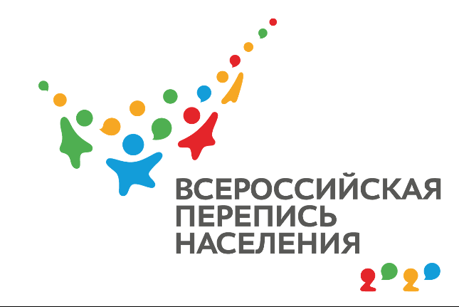

«Автопортрет Северного Кавказа: перепись населения 2021»
Общественно-мониторинговый навигатор
Согласно статье 30 Стратегии национальной безопасности Российской Федерации одним из важнейших стратегических национальных приоритетов России является укрепление национального согласия, политической и социальной стабильности, развитие демократических институтов, совершенствование механизмов взаимодействия государства и гражданского общества. Это невозможно без демографической политики, которая в свою очередь базируется на данных переписи населения.
Одной из фундаментальных проблем всех переписей является проблема полноты учета мнения населения. Результаты переписи особенно ждут в «многотитульных» республиках Северного Кавказа, в которых изменение удельного состава национальностей имеет политическое значение.
Представляемый проект: «Создание общественно-мониторингового навигатора: „Автопортрет Северного Кавказа: Перепись населения 2020“».
В рамках проекта реализуется:
- Проведение исследований по выявлению наиболее потенциально проблемных «точек», проживания и взаимодействия различных этнических групп (по итогам предыдущих переписей) и разработка соответствующей карты;
-
Формирование экспертной команды, которая установит связи
по взаимодействию с представителями различных
диаспор и этнических групп (предполагается
взаимодействие с 23 национальными диаспорами
и их лидерами):
- В период подготовки и проведения переписи командой проекта при тесном взаимодействии с лидерами национальных диаспор планируется организация штабов в субъектах СКФО, для консолидации информации о ходе переписи и возможных нарушениях;
- Будут проводится выезды на места для проведения встреч с представителями национальной общественности в субъектах СКФО.
- Всем представителям национальных диаспор будут предоставлены печатные материалы (памятки и листовки);
- Предполагается оперативная обработка каждого входящего сигнала о возможных нарушениях. После обработки сигнала, информация будет передаваться экспертам для обсуждения проблемы с Росстатом и/или штабом проведения переписи.
- 3. Участие экспертов в заседаниях коллегиальных совещательных органов при органах государственной власти субъектов в которых представлены диаспоры и национально-культурные автономии, посвященных вопросам проведения переписи.
- Проведение не менее 3-х публичных лекций по данной теме, с привлечением экспертов в разных субъектах СКФО на базе вузов (Пятигорск, Дагестан) (см. Партнеры проекта)
- Обмен мнениями, публикация независимых экспертных оценок и публичных докладов на страницах электронных СМИ — партнеров проектов. Планируется проведение итоговой пресс-конференции и опубликование доклада.
В рамках проекта запущена прогностическая карта. На ней реализуется возможность оставлять сообщения о нарушениях в ходе Переписи. Оперативный Штаб будет осуществлять реакцию в доступных в рамках проекта формах на каждое сообщение!